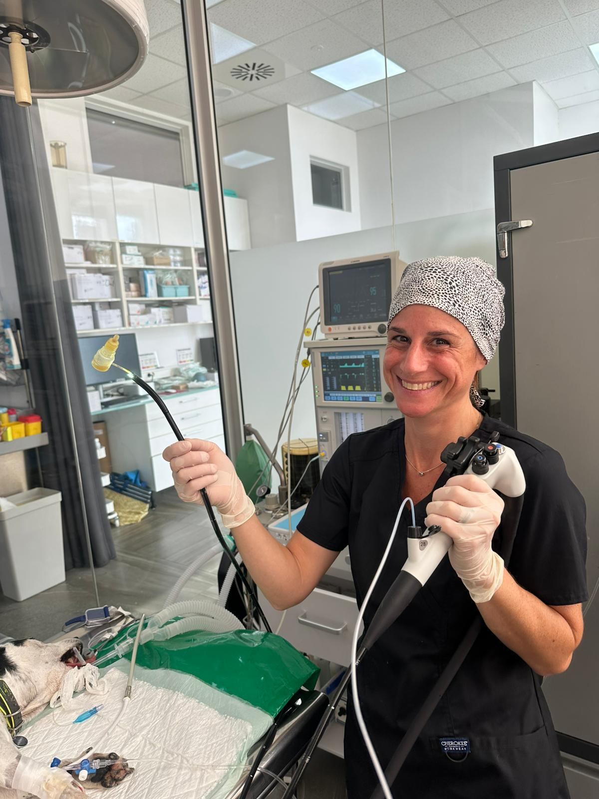

Sobre Carolina
Trayectoria clínica, formación especializada, publicaciones y membresías profesionales.

MVSc
GPCert SAS
ISVPS
Máster UAB
Laparoscopia
Endoscopia
Contribuciones Académicas
Publicaciones y Congresos
Publicaciones y ponencias próximamente.
Opiniones de Colegas
Lo que dicen los veterinarios remitentes
Testimonios próximamente.
Trayectoria Profesional
Membresías y Afiliaciones
Carolina mantiene membresía activa con los siguientes organismos profesionales.
ISVPS
International School of Veterinary Postgraduate Studies — GPCert SAS
ECVS
European College of Veterinary Surgeons — Programa de Residencia
AVEPA
Asociación de Veterinarios Especialistas en Pequeños Animales — Miembro
SEVC
Southern European Veterinary Conference — Participante activa
VESE
Veterinary Endoscopy Society of Europe — Miembro
WSAVA
World Small Animal Veterinary Association — Afiliada
¿Lista para Derivar?
Comenta tu próximo caso
Para consultas de derivación, discusiones de casos o para comprobar la disponibilidad de Carolina, contacta a través del formulario o por correo electrónico.
Contactar con Carolina →